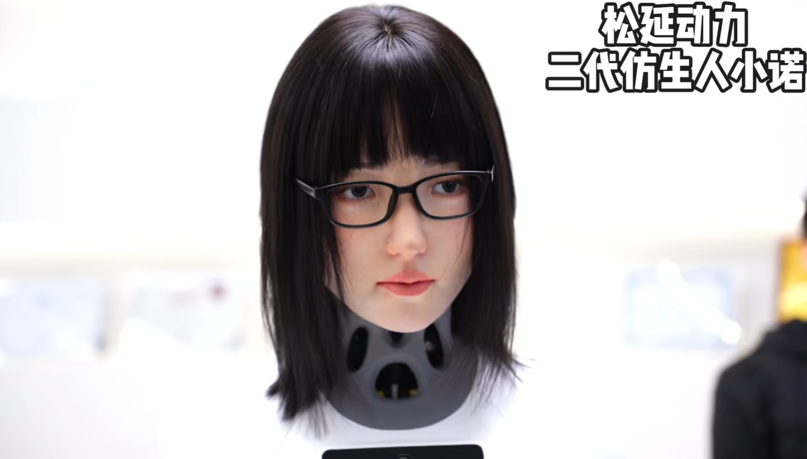
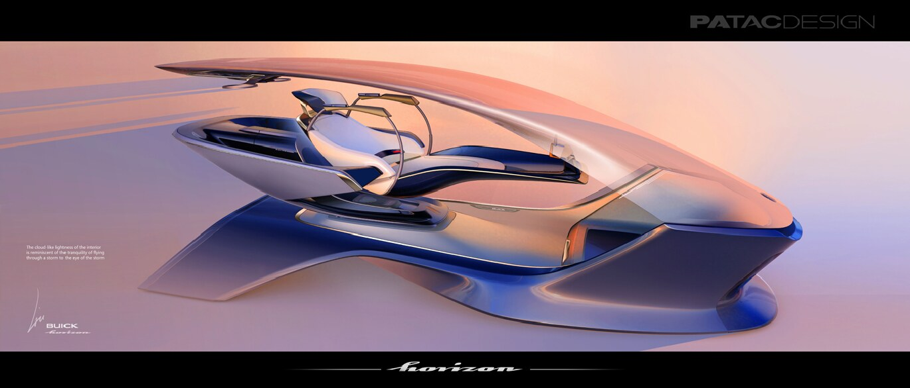

DeepCybo Prime
Humanoid robot industrial design, CAD integration, and final prototype realization.
Open
About
Robotics industrial designer focused on humanoids, biomimetic products, and embodied intelligence.
Haochen Liu is an industrial designer working across robotics, embodied interaction, and intelligent physical systems.
A compact selection of robotics and transportation design projects.
Humanoid robot industrial design, CAD integration, and final prototype realization.
Open
Upper-body product language, face-and-screen integration, and public-facing interaction design.
Open
Additional portfolio materials from earlier transportation and industrial design work.
OpenEducation, project milestones, and recent work across design and embodied intelligence.
M.S. in Information, focused on data, intelligent systems, and embodied model research.
Participated in the appearance design of the biomimetic humanoid robot Xiao Nuo.
Led the industrial design of the humanoid robot Prime with Zhongguancun Academy, ZGC Institute of AI, and DeepCybo.
B.A. in Industrial Design with parallel interests in product systems, robotics, and visualization.